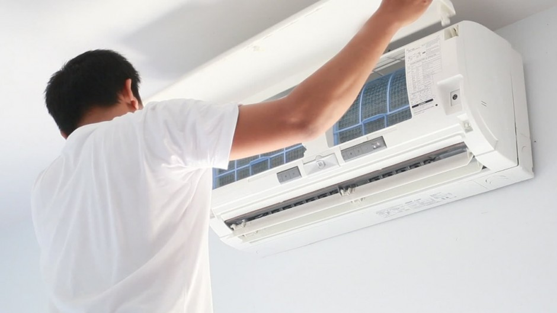

¿VAS A COMPRAR UN AIRE ACONDICIONADO Y NO SABES QUE COMPRAR?
Los sistemas de aire acondicionado condensan aproximadamente siete litros de agua todos los días; agua potencialmente potable que se desperdicia en muchos países del mundo, el agua del grifo no es potable, ya que contiene altos niveles de bacterias. Además, debido a las altas temperaturas, una gran parte de la población posee un sistema de aire acondicionado.
El agua por condensación que sale de los aires acondicionados es destilada, sin nutrientes que podemos reutilizar en tareas de limpieza o para el riego de nuestras plantas, siempre y cuando estos dispositivos estén limpios y tengan revisiones periódicas.
Por lo anterior podemos reutilizar esta agua para limpiar los suelos, cristales, regar las plantas, llenar el depósito del limpiaparabrisas del coche, entre otros. Hay decenas de posibilidades.
Recordemos que esa agua es producto de la condensación y ésta recoge todos los residuos de la habitación que son extraídos por medio de filtros. Allí se quedan bacterias y sustancias potencialmente nocivas, sobretodo si el aparato ya tiene mucho uso y varios mantenimientos.
Pero ante la escasez de agua debemos conocer los usos seguros de lo que sale de nuestros aparatos de aire acondicionado para reducir gastos y reutilizar recursos.Si no conoces cómo funciona el aire acondicionado, puede sorprenderte descubrir que mientras funciona en modo frío, la unidad interior expulsa unas gotas de agua que, de no recogerse mediante un desagüe, pueden llegar a ser un problema y mojar la pared o el suelo de la estancia donde esté instalado. Estas gotas de agua que genera el aire acondicionado son totalmente normales y son el resultado del proceso de evaporación que tiene lugar en el interior de la máquina. Para que un split de aire acondicionado extraiga el calor del interior de la vivienda o local, se produce un cambio de estado físico de un refrigerante, que cambia de líquido a gaseoso a su paso por la unidad evaporadora. A la vez que el refrigerante está circulando por el interior del evaporador, el aire caliente del interior de la casa está pasando a través del evaporador gracias al trabajo de los ventiladores. El refrigerante absorbe en este punto el calor del aire, que sale de la unidad interior mucho más frío.Como sabemos este proyecto transversal tiene giros hacia el cuidado del medio ambiente y nosotros buscamos el objetivo de ayudarlos a encontar la mejor opcion a la hora de comprar un aire acondicionado
Para ello, nos hemos dado a la tarea de investigar toda la informacion encontrada acerca de los aires acondicionados y se la proporcionaremos acontinuacion para qte usted tome la mejor decisiona a la hora de comprar un aire acondicionado
El agua es un recurso natural al que no le prestamos la atención que merece, la inmensa mayoría de la población de la tierra no dispone de agua en una llave, ni siquiera de agua potable, debido a ello, para conseguir una gota de agua potable es necesario que suelan caminar kilómetros de distancias para poder conseguir un poco de agua, y así, satisfacer sus necesidades vitales.
Planchar la ropa con el agua de la secadora, regar las plantas con el agua fría de la ducha o llenar la cisterna con agua de lluvia son algunos de los sencillos trucos que puedes hacer en casa para ahorrar uno de los recursos naturales más valiosos que existen.
TABLA CON LA INFORMACION DE LOS AIRES ACONDICIONADOS
| MARCA | MODELO | TIPO | TIPO DE AIRE | PRECIO | EFICIENCIA ENEGETICA | AGUA RESIDUAL POR HORA |
|---|---|---|---|---|---|---|
| Carrier | Absolut Filter | MiniSplit | Ambos | $37,000 | 1.18918918918919E-02 | 4 LTS. |
| Emerson | Silencioso kool | MiniSplit | Ambos | $11,500 | 1.33333333333333E-02 | 2 LTS. |
| Freyven | FREYVEN MINISPLIT | MiniSplit | Frio | $3,500 | 0.00475 | 3 LTS. |
| FRIKKO | FIT 17 2 | MiniSplit | Ambos | $22,579 | 0.011 | 4.5 LTS. |
| GE | Cools up to 700 sq | Ventana | Ambos | $28,193.10 | 0.0135 | 2.5 LTS. |
| Hisense | Aire Acondicionado Inverter | MiniSplit | Ambos | $10,500 | 0.0105 | 2 LTS. |
| IUSA | Mod. 267658 | MiniSplit | Frio | $5,599 | 0.00875 | 4 LTS. |
| LG | SP182ACA | MiniSplit | Frio | $20,000 | 0.011 | 3 LTS. |
| Mabe | Mini Split Tradicional | MiniSplit | Ambos | $12,300 | 1.13333333333333E-02 | 3 LTS. |
| Midea | Serie Aurora | MiniSplit | Frio | $7,200 | 0.00875 | 5 LTS. |
| Midea Aire | MAP12C1PSP | Portatil | Frio | $7,232 | 0.0175 | 3.5 LTS. |
| Mirage | mirage life | MiniSplit | Ambos | $8,500 | 0.00652 | 3 LTS. |
| MIRAGE MAGNUM | CMF120F | MiniSplit | Ambos | $11,069 | 1.77777777777778E-02 | 4.5 LTS. |
| MIRAGE NEX | CHF121R | MiniSplit | Frio | $6,499 | 1.22222222222222E-02 | 4.5 LTS. |
| Parker | HydroWally, aire acondicionado | MiniSplit | Frio | $10,300 | 0.009375 | 5 LTS. |
| Samsung | MinisplitAir | MiniSplit | Frio | $18,000 | 0.004 | 4 LTS. |
| Trane | 4TXK6548G1 | MiniSplit | Ambos | $52,000 | 0.010625 | 5 LTS. |
| Ventana Mirage | Macc1221L | Ventana | Frio | $4,589 | 1.88888888888889E-02 | 5 LTS. |
| Whirlpool | Minispli whirpool | MiniSplit | Ambos | $7,000 | 9.44444444444444E-03 | 4.5 LTS. |
| YORK | Triple inverter | MiniSplit | Ambos | $22,000 | 0.011 | 5 LTS. |